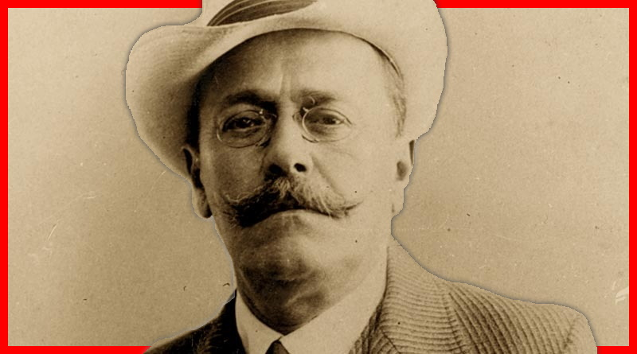

Ion Luca Caragiale a ocolit întotdeauna orice detaliu autobiografic, și mai ales intim. Când Horia Petra Petrescu, fiul unui amic ardelean, și-a ales ca temă de doctorat viața și activitatea sa literară, i-a solicitat lui Caragiale date despre el. Scriitorul, mai mult constrâns, l-a făcut favoarea de a-i da ceva informații, care s-au dovedit însă extrem de sumare. Astfel, la 19 februarie 1908, l-a transmis aproape telegrafic doar anul, luna și ziua nașterii sale, fără a preciza și locul în care deschisese ochii. Vă invităm deci, așadar, într-o călătorie care-l urmărește pe Ion Luca Caragiale, urmărind informații pe care probabil nu le-ați mai auzit până acum.
Dacă ar fi să avansăm o cifră posibilă - bazându-ne pe informații din acea vreme, și acelea eliptice prin lipsa unor evidențe clare, a unor contracte de editare - putem avansa ipoteza, fără a avea garanția și pretenția exactității, că din publicarea operelor sale Caragiale ar fi câștigat o sumă cuprinsă între 7.000-10.000 de lei. Și cum Caragiale s-a manifestat ca scriitor în intervalul 1878-1912, dacă am împărți ipotetica suma de 10.000 de lei la cel 34 de ani ar rezulta 294 de lei pe an și 24,5 lei lunar, bani primiți ca drepturi de autor din publicarea operelor sale. Ca redactor sau corespondent al unor ziare, Caragiale a mai scris alte câteva sute (300-400?) de articole pentru unele fiind plătit cu salariu lunar, pentru altele la bucată.
Salariile, în această perioadă, erau în jurul valorii de 50-60 de lei pentru muncitori, de 70-300 de lei pentru funcționari (un învățător avea salariul de 90 de lei) și de peste 300 de lei pentru funcționarii superiori. Pe 7 noiembrie 1885 s-a stins din viață Ecaterina Momolo Cardini, verișoara primară a mamei lui Caragiale. Aceasta neavând copii, majoritatea terenurilor au ajuns pe mâna lui Caragiale. De pe urma acestora el s-ar fi ales cu nu mai puțin de 3.000.000 lei vechi, echivalent în ziua de astăzi cu 14.000.000 dolari.
Cârciuma era laboratorul și biroul de lucru al acestui neasemuit „spion" social, spațiul de unde capătă motive și personaje, metehnele şi pulsul vremii - „În berărie, asociindu-se ușor cu oricine socotea că i-ar putea oferi un nou element de caracterizare, fie chiar numele său, manifesta o pasiune a observațiilor, pentru care nu se poate găsi nici un alt exemplu asemănător”.
De asta și în scrierile sale, societatea masculină prevalează, spiritul feminin fiind perceput de el doar ca un element de fundal, de culoare, încă tributar păcatului primordial sau mofturilor romanțioase. „Pentru femei avea mai puțin interes decât pentru bărbați și, când veneau cunoștințe sau prieteni, se separau invariabil în două camere: femeile se adunau într-o odaie, iar bărbații rămâneau cu el", notează fiica sa, Ecaterina Caragiale Logadi. Și tot specific boemului incurabil e un anume scepticism față de tot ce depășește sfera ludicului, față de jocurile oamenilor mari, așa cum ar fi și politica.
În anii petrecuți la Berlin, Caragiale s-a dedicat mult mai mult familiei decât înainte, și sănătatea fiindu-i deja șubrezită. A fost un tată foarte grijuliu, pierderea celor doua fetițe marcându-l decisiv. Astfel, dezvoltase o fobie față de pericolul microbian (e foarte posibil ca autoexilul într-un oraș vestit pentru curățenia sa să aibă și acest motiv): din această cauză nu și-au dat niciodată copiii la școală, deși e foarte adevărat ca le-a asigurat o educație aleasă prin meditatori dintre cei mai vestiți. Mergea până acolo încât le cenzura și micile tentații sportive, precum mersul pe bicicletă și obliga să poarte tot timpul mănuși, iar din cauza unei experiențe personale nefericite din tinerețe se pare că l-ar fi surprins un incendiu teribil la circul „Ring" - le interzicea mersul la circ sau la cinematograf.
Deloc intimidat de mărime și de „mărimi", el știe foarte bine că „oamenii sunt peste tot oameni”, cu defectele și calitățile lor, și că pe toată planeta nu există „speță zoologică mai unitară. Între un țăran obișnuit și cel mai rafinat european, altă deosebire hotărâtă nu există decât modul de a-și găti bucatele”. Că, de asemenea, deși limba, costumele, „apucăturile intelectuale și morale”, religia și tot restul dau aparența unor deosebiri majore, oamenii „în fundul lor, pretutindeni și totdeauna sunt aceiași”. Caragiale călătorise îndeajuns prin România (pe vremea lui împărțită în două, cu graniță spre Ardeal), dar și prin Europa, ca să aibă termen de comparație pentru locul pe care și-l alesese. În scurt timp ajunge să numească Berlinul „acasă" și să pornească, atunci când nevoi administrative sau politice îl solicită, fără entuziasm, în patrie. Nu pentru că n-ar fi iubit-o, ci pentru că, atât în viată, cât și în operă, decorul i se pare fără importanță. Partea pe care o are el, la Berlin, din România îi e de ajuns: soția și copiii, câțiva prieteni, ziare, cărți, covoare orientale, poze ale părinților scrisori și literatura proprie.
surse bibliografice:
articol realizat de Costea Eduard și Ionescu Cătălin